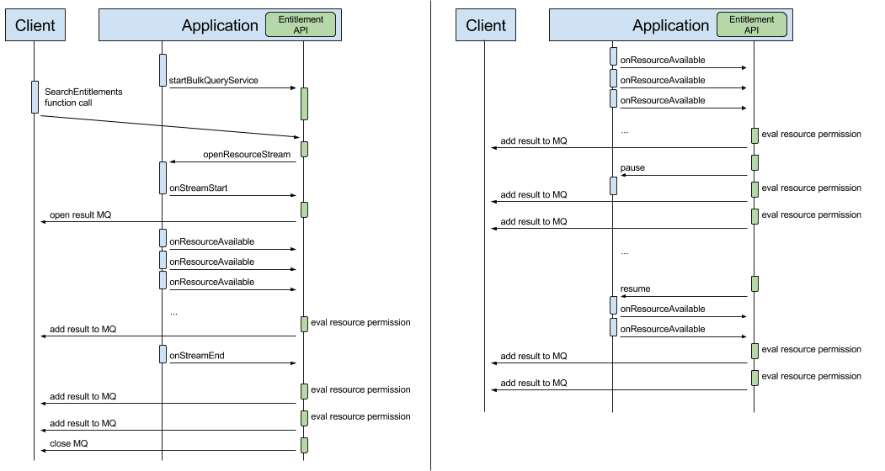
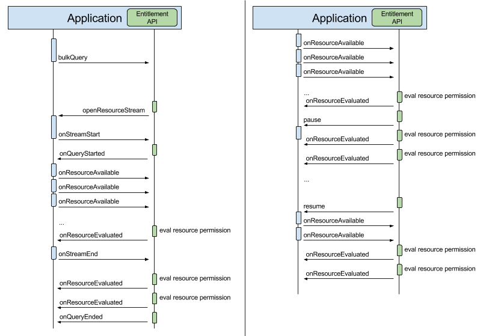

Interface IMkvBulkEntitlementResourceStreamFactory
-
@Keep @KeepPublicClassMembers public interface IMkvBulkEntitlementResourceStreamFactoryIMkvBulkEntitlementResourceStreamFactory is a factory of MkvBulkEntitlementResourceStream An proper implementation of this interface is required to perform Bulk Entitlement Queries to the Entitlement API.
For each Bulk Entitlement Query, the API will request a new Resource stream, passing the specified filter representing the regex of the interesting Resources.
The following diagram depicts the normal sequence of events when the Entitlement API is initialized usingMkvEntitlementManager.startBulkQueryService(String, IMkvBulkEntitlementResourceStreamFactory):

In the above diagram:- The application starts the Bulk Query Service using
MkvEntitlementManager.startBulkQueryService(String, IMkvBulkEntitlementResourceStreamFactory)method This causes the Bulk Entitlement API to publish the required function on the ION Bus and listen for calls - A client application sends a function call directly to the Bulk Entitlement API
- The Bulk Entitlement API requests the application to open a resource stream via
openResourceStream(String, IMkvBulkEntitlementResourceCallback)method - The application notifies when the stream is ready to start via
IMkvBulkEntitlementResourceCallback.onStreamStart(IMkvBulkEntitlementResourceStream)method This causes the Bulk Entitlement API to open the result Message Queue towards the client - The application notifies every available resource in the stream via
IMkvBulkEntitlementResourceCallback.onResourceAvailable(String)method For each resource, the Bulk Entitlement API will process the required entitlement evaluation and returns the proper permission on the result Message Queue - The application notifies that the stream is over via
IMkvBulkEntitlementResourceCallback.onStreamEnd()method This causes the Bulk Entitlement API to wait for all pending evaluation and eventually close the result Message Queue.
On the left, we see the use case where the Bulk Entitlement API can optionally request the application to pause the resource stream for congestion control reasons, using theIMkvBulkEntitlementResourceStream.pause()method.
The application can then optionally suspend the generation of new resources.
When the Bulk Entitlement API detects it is ready to process new resources from the stream, the application will be notified using theIMkvBulkEntitlementResourceStream.resume()method and the application can then resume the processing.
The following diagram is a generalized overview of the normal sequence of events when the Entitlement API is invoked on-demand by the application viaMkvEntitlementManager.bulkQuery(IMkvBulkEntitlementRequest, IMkvBulkEntitlementResourceStreamFactory, String, IMkvBulkEntitlementRequestListener):

In the above diagram:- The application starts a Bulk Query using
MkvEntitlementManager.bulkQuery(IMkvBulkEntitlementRequest, IMkvBulkEntitlementResourceStreamFactory, String, IMkvBulkEntitlementRequestListener)method - The Bulk Entitlement API requests the application to open a resource stream via
openResourceStream(String, IMkvBulkEntitlementResourceCallback)method - The application notifies when the stream is ready to start via
IMkvBulkEntitlementResourceCallback.onStreamStart(IMkvBulkEntitlementResourceStream)method This causes the Bulk Entitlement API to notify that the query evaluation can now start viaIMkvBulkEntitlementRequestListener.onQueryStarted(IMkvBulkEntitlementRequest)method - The application notifies every available resource in the stream via
IMkvBulkEntitlementResourceCallback.onResourceAvailable(String)method For each resource, the Bulk Entitlement API will process the required entitlement evaluation and returns the proper permission to the application viaIMkvBulkEntitlementRequestListener.onResourceEvaluated(IMkvBulkEntitlementRequest, String, String, com.iontrading.mkv.bulkentitlements.MkvEntitlementEngine.MkvSingleEntitlementResult)method - The application notifies that the stream is over via
IMkvBulkEntitlementResourceCallback.onStreamEnd()method This causes the Bulk Entitlement API to wait for all pending evaluation and eventually notify that the query is now over viaIMkvBulkEntitlementRequestListener.onQueryEnded(IMkvBulkEntitlementRequest)method
- See Also:
MkvEntitlementManager,IMkvESLibStatusListener,MkvESLibStatus,MkvEntitlementManager.startBulkQueryService(String, IMkvBulkEntitlementResourceStreamFactory),MkvEntitlementManager.publishQueryUserEntitlementsFunServer(com.iontrading.mkv.events.MkvFunctionListener),MkvEntitlementManager.bulkQuery(IMkvBulkEntitlementRequest, IMkvBulkEntitlementResourceStreamFactory, String, IMkvBulkEntitlementRequestListener),MkvBulkEntitlementRequest,IMkvBulkEntitlementResourceStreamFactory,IMkvBulkEntitlementResourceStream,IMkvBulkEntitlementResourceCallback,IMkvBulkEntitlementRequestListener,MkvBulkEntitlementQuery
- The application starts the Bulk Query Service using
-
-
Method Summary
All Methods Instance Methods Abstract Methods Modifier and Type Method Description voidopenResourceStream(String resourceFilter, IMkvBulkEntitlementResourceCallback callback)Open a Stream of Resources given the specified filter A filtering string can be used to restrict the set of resources the client is interested in.
-
-
-
Method Detail
-
openResourceStream
void openResourceStream(String resourceFilter, IMkvBulkEntitlementResourceCallback callback)
Open a Stream of Resources given the specified filter A filtering string can be used to restrict the set of resources the client is interested in. Typical filtering string could be:- "*": to get all the resources
- "EUR*": to get all the resources with a given prefix
- any regex
- Parameters:
resourceFilter- is the filtering stringcallback- a callback to notify of stream begin/stream data/stream end events
-
-